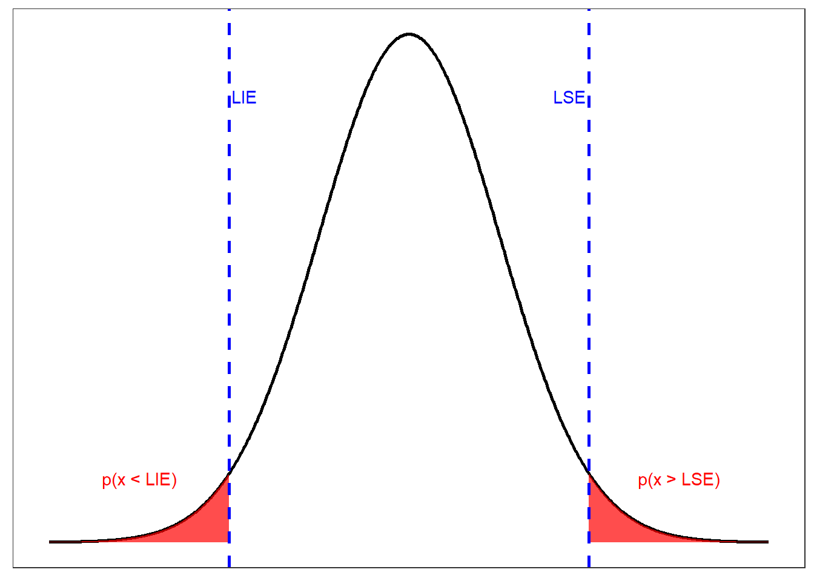
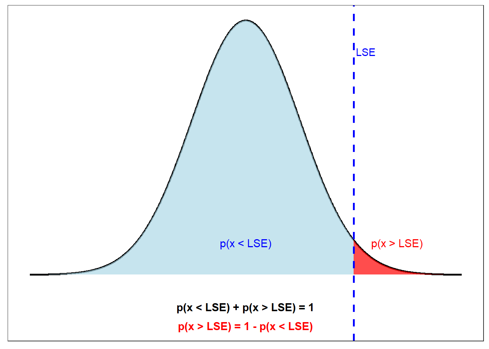
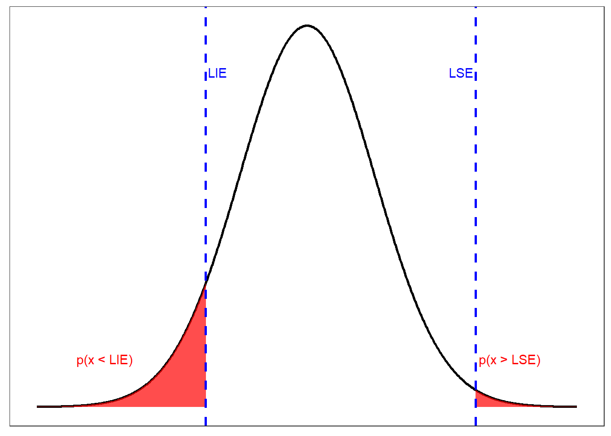
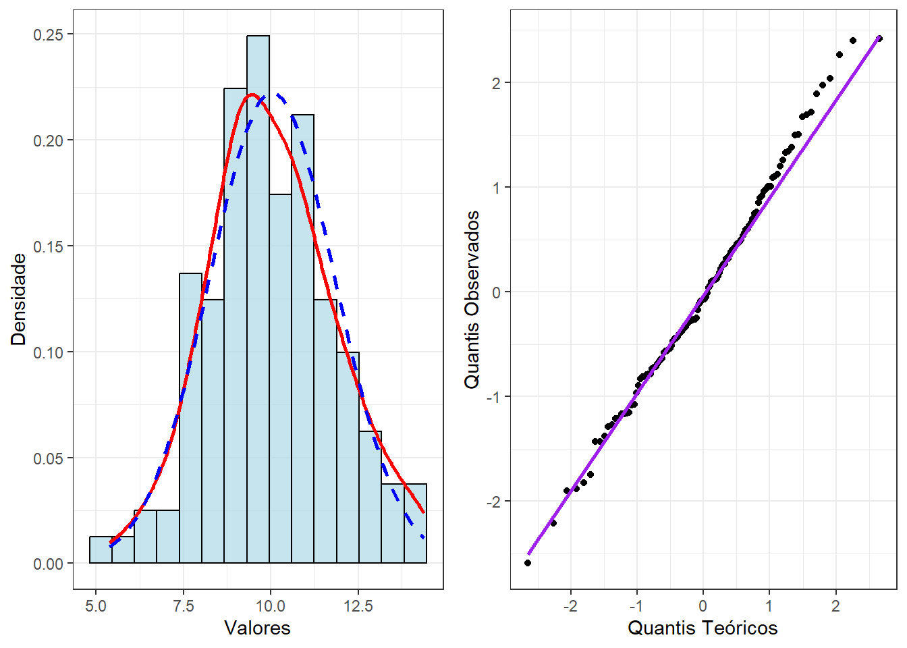
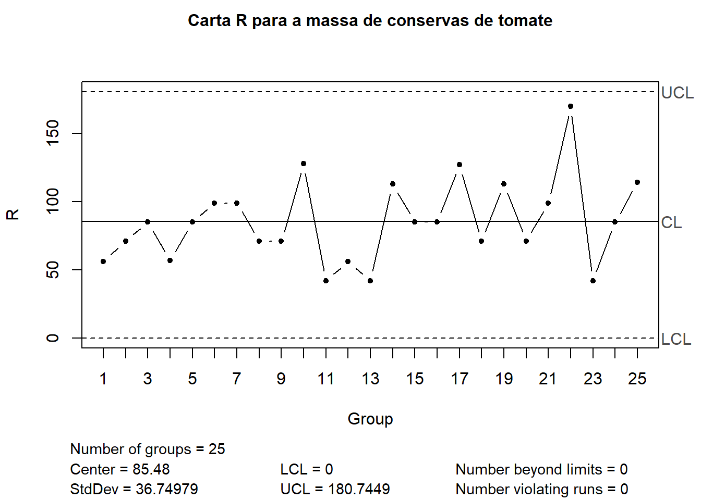
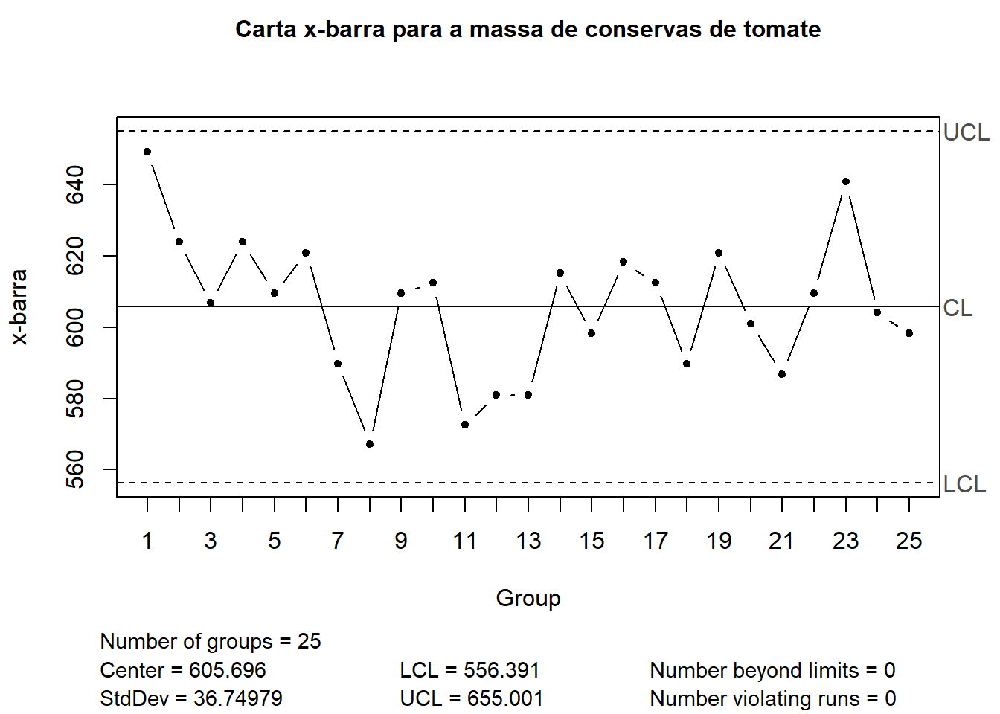
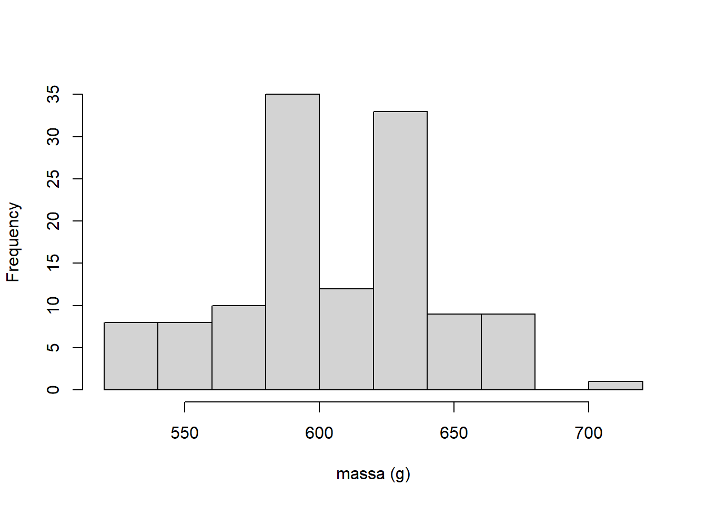
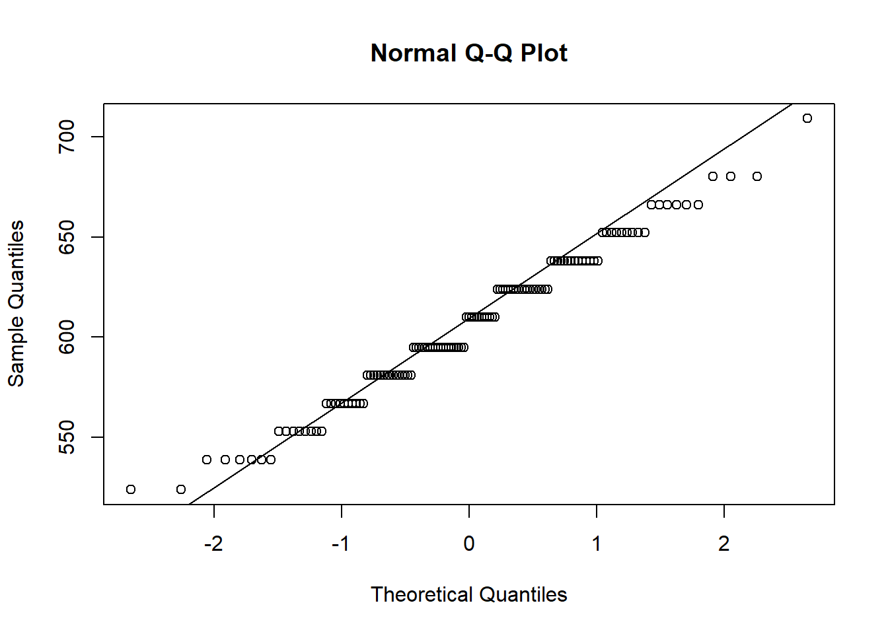
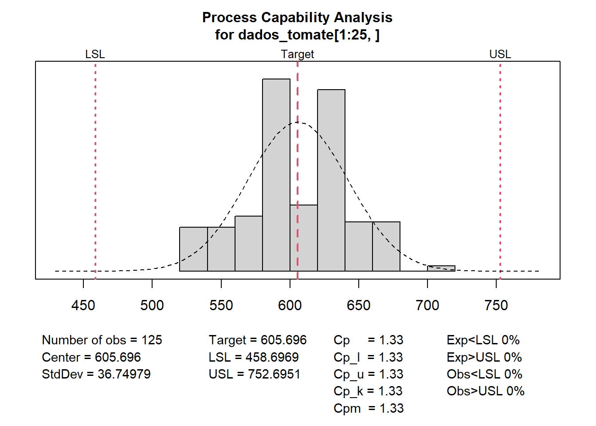

Estudo da capacidade de processos (para variáveis)
Intuição
O estudo da capacidade ou capabilidade de processos consiste na avaliação da capacidade do processo atender as especificações. Para tal, antes deve-se realizar a primeira fase do controle estatístico, ou seja, estimar os limites de controle, sendo recomendada a avaliação da capacidade apenas se o processo estiver sob controle estatístico. É importante entender que nem sempre um processo sob controle é um processo capaz, ou seja, nem sempre um processo que não apresenta causas comuns e especiais de variação é um processo que atende aos limites de especificação. Os limites de especificação são definidos segundo projeto do produto/processo, norma ou pedido do cliente e devem ser satisfeitos. Por exemplo, um tijolo de barro deve ter no mínimo 1,5 MPa de resistência à compressão, o pão francês deve ter massa entre 47,5 e 52,5 g. Tais especificações foram definidas por normas. Em alguns casos, como no do pão francês tem-se como objetivo padronizar o produto e proteger o cliente de abusos. Já no caso do tijolo a especificação está relacionada a segurança pessoal e patrimonial, apesar de neste caso não se tratar de alvenaria estrutural. Em outros casos o cliente define as especificações. Por exemplo, a Petrobrás pode pedir à VSB tubos sem costura com especificações específicas dimensionais de resistência mecânica e resisteância à corrosão, segundo a aplicação dos produtos encomendados.
Fração de não conformes
A proporção de não conformes consiste na proporção de itens abaixo do limite inferior de espeificação, LIE, e acima do limite superior de especificação, LSE, conforme segue.
\[ \begin{align} p &= p(x<LIE) + p(x>LSE) \\ p &= p(x<LIE) + [1-p(x<LSE)] \\ \end{align} \]
A seguir ilustra-se tal probabilidade.
É importante entender que \(p(x>LSE) = 1-p(x<LSE)\), conforme ilustrado a seguir.

Partes por milhão de defeituosos
Um índice prático comumente usado para estimar o número de itens não conformes em 1 milhão de produtos é o \(ppm\) (partes por milhão).
\[ ppm = p \times 10^6 \]
Índice de capacidade para processos centrados
O índice de capacidade \(c_p\) consiste na razão entre a faixa de tolerância ou de especificação e seis desvios-padrões, isto é:
\[ c_p = \frac{LSE-LIE}{6\hat\sigma} \]
Onde \(\hat\sigma\) pode ser obtido a partir do desvio-padrão calculado pelo método \(R\), isto é, \(\hat\sigma = \overline R/d_2\), ou pelo método \(s\), isto é, \(\hat \sigma = \frac{s}{c_4}\), dependendo de qual carta foi usada na primeira fase para controlar causa comum de variação. É importante que o processo esteja sob controle estatístico para avaliar a capacidade do processo.
Percentual da faixa de tolerância usada pelo processo
Para saber o percentual da faixa de tolerência que o processo usa, basta inverter o \(c_p\) e multiplicar por 100%.
\[ P = \frac{1}{c_p}100\% \]
Relação entre \(C_p\), \(P\), \(p\) e \(ppm\)
A seguir expõe-se uma Tabela que relaciona as métricas de capacidade consideradas. Por exemplo, um processo com \(c_p=2\) usa apenas 50% da faixa de tolerância e apresenta 0,002 ppm, apresentando “folga” no atendimento das especificações.
| \(C_p\) | \(P\) | \(p\) | ppm |
|---|---|---|---|
| 0.50 | 200.0 | 1.34e-01 | 133614.403 |
| 0.67 | 149.3 | 4.44e-02 | 44431.189 |
| 0.83 | 120.5 | 1.28e-02 | 12774.310 |
| 1.00 | 100.0 | 2.70e-03 | 2699.796 |
| 1.33 | 75.2 | 6.61e-05 | 66.073 |
| 1.67 | 59.9 | 5.44e-07 | 0.544 |
| 2.00 | 50.0 | 1.97e-09 | 0.002 |
| 2.50 | 40.0 | 6.38e-14 | 0.000 |
| 3.00 | 33.3 | 2.26e-19 | 0.000 |
Capacidade de processos não centrados
É importante observar que em processos descentrados o \(c_p\) não é a melhor medida, uma vez que não considera a média, ou seja, a posição do processo na faixa de tolerância. A Figura a seguir ilustra um processo onde há maior probabilidade de não conformidade abaixo do limite inferior de especificação que acima do limite superior de especificação.

Para processos descentrados usa-se o índice \(c_{pk}\), calculado conforme segue, como sendo o mínimo entre o índice de capacidade inferior \(c_{pi}\) e o índice de capacidade superior, \(c_{pk}\), levando em consideração apenas o limite que o processo tem mais dificuldade em atender, dado o deslocamento da média.
\[ \begin{align} c_{pk} &= min(c_{pi};c_{ps}) \\ c_{pk} &= min\biggl(\frac{\mu-LIE}{3\sigma};\frac{LSE-\mu}{3\sigma} \biggr) \\ \end{align} \]
A maioria dos processos práticos tem um deslocamento na média, de forma que deve-se usar o \(c_{pk}\) em detrimento do \(c_p\). Caso o usuário deseje calcular o percentual da faixa de tolerância usada pelo processo, \(P\), deve-se considerar o \(c_{pk}\), obviamente, isto é, \(P=100\%\times1/c_{pk}\). A Tabela a seguir expõe a relação entre as métricas consideradas para processos descentrados.
| \(C_p\) | \(P\) | \(p\) | ppm |
|---|---|---|---|
| 0.50 | 200.0 | 5.01e-01 | 501349.898 |
| 0.67 | 149.3 | 3.05e-01 | 305249.784 |
| 0.83 | 120.5 | 1.61e-01 | 161120.096 |
| 1.00 | 100.0 | 6.68e-02 | 66810.599 |
| 1.33 | 75.2 | 6.39e-03 | 6387.175 |
| 1.67 | 59.9 | 2.24e-04 | 224.053 |
| 2.00 | 50.0 | 3.40e-06 | 3.398 |
| 2.50 | 40.0 | 9.87e-10 | 0.001 |
| 3.00 | 33.3 | 3.19e-14 | 0.000 |
Normalidade de processos
É importante avaliar se a variável monitorada tem boa aproximação da distribuição normal, uma vez que os índices de capacidade apresentados são baseados nesta distribuição. A seguir observa-se o histograma de observações usadas na primeira fase de um processo sob controle, o qual deseja-se avaliar a capacidade. Pode-se observar que os dados apresentam boa aproximação da função densidade de probabilidade da distribuição normal, plotada em linha tracejada azul. A linha vermelha consiste em uma aproximação amostral da densidade dos dados. Outra abordagem gráfica para avaliar a normalidade dos dados é o gráfico quantil-quantil da normal, ou qqnorm. Este gráfico plota as observaões ordenadas e padronizadas (quantis observados) em relação aos quantis da distribuição normal padrão (quantis teóricos). Quanto mais próximo da linha diagonal, melhor a aproximação das observações à distribuição normal. Além dos métodos gráficos pode-se usar o teste de normalidade de Shapiro-Wilk ou outro para avaliar se os dados seguem a distribuição normal.

Implementação em R
Retomemos o caso do controle estatístico do processo de produção de conservas de tomate.
tomate <- read.csv("tomate.csv", header=T)
head(tomate) Subgrupo Data Tempo X1 X2 X3 X4 X5
1 1 Sept. 21 09:30:00 624 638 638 680 666
2 2 Sept. 21 10:50:00 581 638 638 652 610
3 3 Sept. 21 11:45:00 567 581 652 624 610
4 4 Sept. 21 14:30:00 595 624 624 652 624
5 5 Sept. 21 17:25:00 638 553 638 624 595
6 6 Sept. 22 10:00:00 652 666 595 624 567library(qcc)
qcc.options(bg.margin = "white")dados_tomate <- tomate[,4:8]
cartaR_tomate <- qcc(dados_tomate[1:25,],
type="R",
title = "Carta R para a massa de conservas de tomate", ylab = "R")
cartaxbar_tomate <- qcc(dados_tomate[1:25,],
type="xbar", std.dev = "UWAVE-R",
title = "Carta x-barra para a massa de conservas de tomate",
ylab = "x-barra")
Supondo que as especificações de massa são (458.6969; 752.6951) g. Qual a probabilidade de não atendimento destes limites?
# Especificações do produto
LIE = 458.6969
LSE = 752.6951
# Dados do processo
xbar = cartaxbar_tomate$center
s = cartaxbar_tomate$std.devPode-se calcular a fração de não conformes padronizando a variável conforme segue.
p <- pnorm((LIE - xbar)/s) + (1 - pnorm((LSE-xbar)/s))
p[1] 6.334278e-05Pode-se obter as probabilidades definindo a média e o desvio-padrão da normal no comando pnorm, evitando a padronização.
p <- pnorm(LIE, mean = xbar, sd = s) + (1 - pnorm(LSE, mean = xbar, sd = s))
p[1] 6.334278e-05A média está centrada nas especificações? Se sim, calcule o índice de capacidade \(c_p\) para processos centrados.
(LIE+LSE)/2[1] 605.696cp <- (LSE-LIE)/(6*s)
cp[1] 1.333333Qual o número de partes por milhão de defeituosos deste processo?
ppm <- p*10^6
ppm[1] 63.34278Seja P o percentual da faixa de tolerância ou especificação usada pelo processo. Calcule-a para o processo de produção de conservas de tomate.
P <- 100*(1/cp)
P[1] 75.00002É muito importante avaliar a normalidade dos dados antes de realizar um estudo de capacidade, uma vez que as métricas sugeridas para cálculo de capacidade são baseadas na distribuição normal.
hist(x = as.matrix(dados_tomate[1:25,]),
main = "",
xlab = "massa (g)")
Gráfico quantil-quantil.
qqnorm(as.matrix(dados_tomate[1:25,]))
qqline(as.matrix(dados_tomate[1:25,]))
Teste de normalidade de Shapiro-Wilk. Se p-valor > 0,05 não rejeita-se a hipótese nula de normalidade dos resíduos.
shapiro.test(as.matrix(dados_tomate[1:25,]))
Shapiro-Wilk normality test
data: as.matrix(dados_tomate[1:25, ])
W = 0.98165, p-value = 0.08781O pacote qcc tem um comando para análise de capacidade que facilita os cálculos. Entretanto, para usá-lo, além das especificações, o usuário deve ter os dados dos subgrupos racionais (dados amostrais) do processo e não somente as estatísticas (xbar e s).
process.capability(cartaxbar_tomate, spec.limits=c(LIE, LSE))
Process Capability Analysis
Call:
process.capability(object = cartaxbar_tomate, spec.limits = c(LIE, LSE))
Number of obs = 125 Target = 605.7
Center = 605.7 LSL = 458.7
StdDev = 36.75 USL = 752.7
Capability indices:
Value 2.5% 97.5%
Cp 1.333 1.167 1.499
Cp_l 1.333 1.186 1.481
Cp_u 1.333 1.186 1.481
Cp_k 1.333 1.157 1.509
Cpm 1.333 1.168 1.498
Exp<LSL 0% Obs<LSL 0%
Exp>USL 0% Obs>USL 0%Seja um processo com média xbar = 50 e desvio-padrão sd = 2. Tal processo apresenta especificações (38; 62). Qual a probabilidade de defeituosos de tal processo?
# Especificações do produto
LIE = 38
LSE = 62
# Dados do processo
xbar = 50
s = 2
p <- pnorm((LIE - xbar)/s) + (1 - pnorm((LSE-xbar)/s))
p[1] 1.973175e-09O processo é centrado? Se sim, qual o valor de cp?
(LSE+LIE)/2[1] 50cp <- (LSE-LIE)/(6*s)
cp[1] 2Qual o número de partes por milhão de defeituosos deste processo?
ppm <- p*10^6
ppm[1] 0.001973175Calcule o percentual da faixa de tolerância usada pelo processo.
100/cp[1] 50Considere o mesmo processo com mesmo desvio-padrão e especificações, porém com um deslocamento na média de 1,5 sigma, de forma que xbar = 53. Qual a probabilidade de não atendimento das especificações?
# Especificações do produto
LIE = 38
LSE = 62
# Dados do processo
xbar = 53
s = 2
p <- pnorm((LIE - xbar)/s) + (1 - pnorm((LSE-xbar)/s))
p[1] 3.397673e-06O processo é centrado? Se não, calcule \(c_{pk}\).
cpi <- (xbar - LIE)/(3*s)
cps <- (LSE - xbar)/(3*s)
cpk <- min(cpi,cps)
cpk[1] 1.5Calcule o número de partes por milhão de defeituosos deste processo.
p*10^6[1] 3.397673